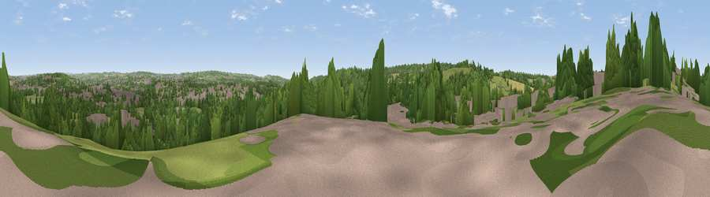

Viewpoint near Stoke
#37730 in England · top 75% of its area beats it · near StokeThe view, rendered

A 360° render of this exact spot computed from the terrain model, tree cover and land cover — summer colours, afternoon light, calibrated against photographs of famous viewpoints. Real trees, hedges and buildings will differ in detail.
The panorama
Grey silhouette: terrain skyline in each direction (720 bearings, Earth curvature and refraction included). Dashed green: skyline with trees (+15 m) and buildings (+8 m) as obstacles. Blue strip: how far the ground is visible on each bearing.
Where the view opens
Wedge length = distance to the farthest visible ground on that bearing (vegetation-aware). Rings at 10, 25 and 50 km.
What fills the view
39% woodland · 37% grassland · 21% built-up · 3% cropland
Angular shares of the visible panorama (visual magnitude), not map area. Landscape diversity 0.52 (0–1 Shannon).
Key numbers
More beautiful places nearby
The staircase of upgrades: each row has a higher view potential than everything closer. Driving times are estimates from straight-line distance, calibrated against real road routing — check an actual route before setting out.
| Place | Direction | Drive | Score |
|---|---|---|---|
| Viewpoint near Beech | SW · 1 km | ~3 min | 49.9 |
| Viewpoint near Whitmore | WSW · 2 km | ~5 min | 55.0 |
| Hanchurch Hills | SW · 3 km | ~7 min | 59.1 |
| Viewpoint near Beech | SSW · 3 km | ~8 min | 61.8 |
| Viewpoint near Beech | S · 4 km | ~8 min | 63.7 |
| Viewpoint near Madeley Heath | NW · 8 km | ~16 min | 65.4 |
| Bignall Hill | NNW · 9 km | ~18 min | 75.2 |
| Viewpoint near Mow Cop | N · 15 km | ~27 min | 80.2 |
52.97942, -2.21628 · source: screening · position refined by local search. Computed location — check access rights before visiting.